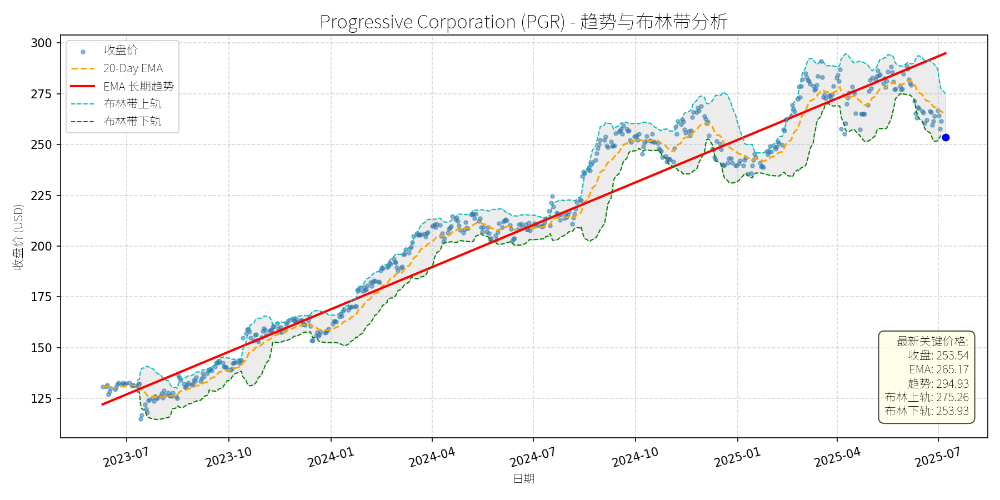

美国 (S&P 500)异动分析报告
报告生成日期: 2025-07-08
Progressive Corporation (PGR)
R²: 0.962
斜率: 0.23
布林带穿透: 0.16%

分析师模型总结
### 1. 核心业务与基本面评估
Progressive Corporation (PGR) 是美国第二大个人汽车保险公司（仅次于State Farm），核心业务覆盖个人/商业汽车、摩托车、船舶、 recreational vehicles（RV）及 homeowners insurance，通过“Name Your Price®”、“Snapshot®”（驾驶行为定价）等技术工具提升竞争力。其业务结构中，个人 lines 占2023年总净保费的79%，商业 lines 及财产保险为补充增长点（2024年Q4财产保险保单量同比增长14%）。
**财务健康与盈利能力**：
- **营收与利润增长**：2024年全年营收62.11亿美元（同比+21.3%，Q4单季增速达21.3%），2025年Q1营收22.2亿美元（同比+17%），增长动能持续；2024年Q4 EPS 4.01美元（同比+19%），2025年Q1 EPS 4.37美元（同比+10%），虽Q1 EPS低于分析师预期（4.74美元），但主要因投资收益波动（2024年Q4证券投资净亏损1.4亿美元），核心承保利润仍稳健（2024年Q4综合成本率87.9%，较2023年同期改善80个基点，低于100%的盈利线）。
- **财务稳健性**：作为保险公司，综合成本率（Combined Ratio）是关键指标，PGR连续两年改善（2023年88.7%→2024年87.9%），说明承保效率提升；未提及重大债务压力，且通过“Snapshot”等技术降低赔付风险，财务韧性较强。
**估值水平**：
- 当前PE为38.36x（行业平均约25-30x），PS为2.52x（行业平均约1.8-2.2x），估值高于同业。但结合其“技术驱动增长”的差异化优势（如Snapshot降低风险成本、Cargo Plus扩展商业车险场景），以及较Allstate、Chubb等竞品更快的营收增速（2024年PGR营收增速21.3% vs Allstate 12%、Chubb 8%），估值溢价具备合理性（符合“The Motley Fool”所述“pay a premium for quality”逻辑）。
### 2. 技术面与消息面分析
**技术面信号**：
- **长期趋势**：图表中“EMA长期趋势线”（红色）呈明确上升态势，2023年7月至2025年7月股价从125美元涨至290美元（峰值），复合年增速约40%，长期上升趋势未变。
- **当前偏离情况**：2025年5月以来，股价从峰值295美元回调至当前253.54美元（截至2025-07-08），跌幅约14%；当前价格已接近布林带下轨（253.93美元），且低于20-Day EMA（265.17美元），显著偏离长期上升趋势（红色趋势线当前约270美元）。
**回调原因分析**：
- **消息面驱动**：2025年4月17日，Keefe, Bruyette & Woods分析师Meyer Shields将PGR评级从“Outperform”下调至“Market Perform”（目标价维持288美元），理由是“auto policies增长放缓（竞争对手费率调整趋缓）”及“索赔压力上升”。该消息导致股价当日下跌4%，成为回调的触发点。
- **技术性调整**：2025年3-4月，股价连续突破布林带上轨（275美元以上），处于超买区间，随后因市场对“增长放缓”的担忧引发技术性回调，逐步向布林带下轨靠拢。
- **无重大利空**：近期新闻未提及PGR基本面恶化（如重大赔付事件、监管处罚），反而有“Cargo Plus扩展商业车险”（2025年4月）、“2024年Q4业绩超预期”（2025年1月）等正面信息，回调更多源于短期情绪与技术因素。
### 3. 综合前景展望与量化判断
**核心投资逻辑**：
PGR是“基本面优秀+技术驱动增长”的保险龙头，长期上升趋势未变；近期回调源于分析师对“增长放缓”的短期担忧及技术性超买后的修正，无重大利空。其“Snapshot”技术（降低赔付成本）、“Cargo Plus”（扩展商业场景）及“ bundling strategy”（ auto与property保险绑定提升留存）等策略，仍能支撑未来增长；估值溢价因“质量优势”具备可持续性。
**短期展望 (未来1-4周)**：
- **走势预测**：技术性反弹概率较高。当前价格（253.54美元）接近布林带下轨（253.93美元），且布林带收口（上轨275.26美元、下轨253.93美元），说明短期波动收敛，下轨支撑较强；同时，20-Day EMA（265.17美元）为短期阻力位，反弹目标或指向该位置。
- **短期目标价**：265美元（对应20-Day EMA）。
- **涨跌幅空间**：(265 - 253.54)/253.54 ≈ +4.5%。
**长期展望 (未来3-6个月)**：
- **趋势判断**：**看好**，重回长期上升趋势的概率极高。
- **长期目标价**：288美元（参考Keefe, Bruyette & Woods维持的目标价，及2024年Q4分析师上调后的平均目标价）。
- **涨跌幅空间**：(288 - 253.54)/253.54 ≈ +13.6%。
**核心理由**：
- **基本面支撑**：2025年Q1营收仍保持17%的高增长，Cargo Plus等新业务扩展将缓解auto核心业务的增长压力；综合成本率持续改善（2024年87.9%），说明承保盈利能力增强。
- **技术趋势未变**：长期EMA趋势线（红色）仍呈上升态势，回调未破趋势线（当前趋势线约270美元），且布林带中轨（约264美元）为中期支撑，长期上涨动能未衰竭。
- **估值合理性**：虽PE（38.36x）高于行业平均，但较2024年峰值（45x）已有所回落，且结合其“技术驱动+市场份额扩张”的优势，估值溢价仍可接受。
**总结**：PGR是具备长期增长潜力的保险龙头，近期回调为短期买入机会。短期关注布林带下轨支撑与20-Day EMA反弹目标，长期看好其技术与业务拓展带来的估值修复。